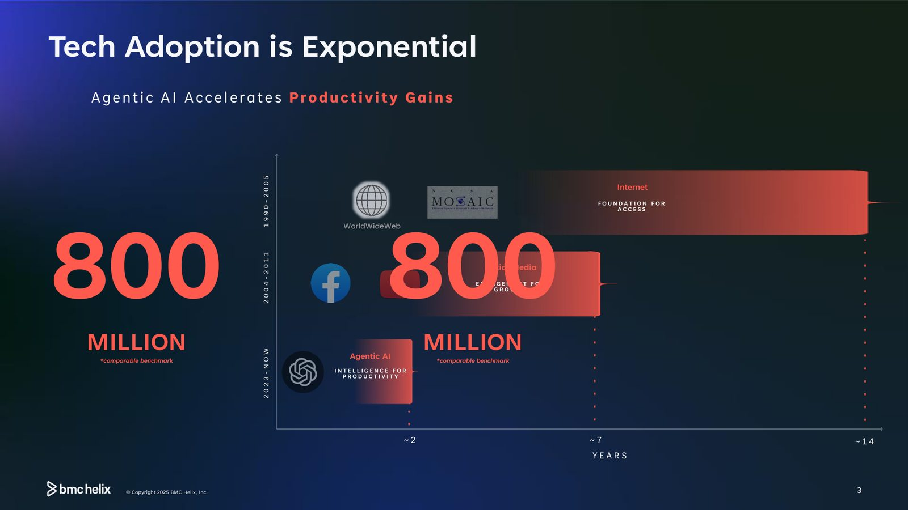
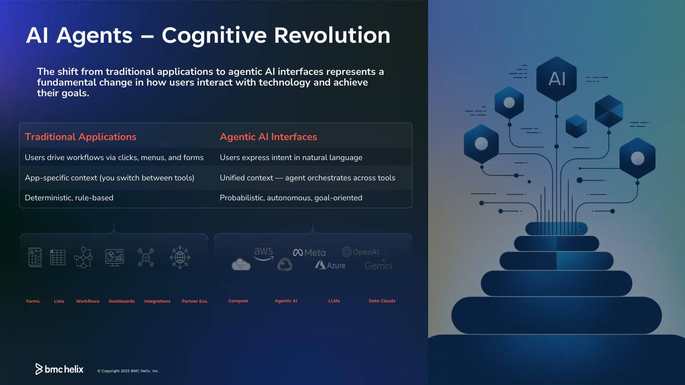
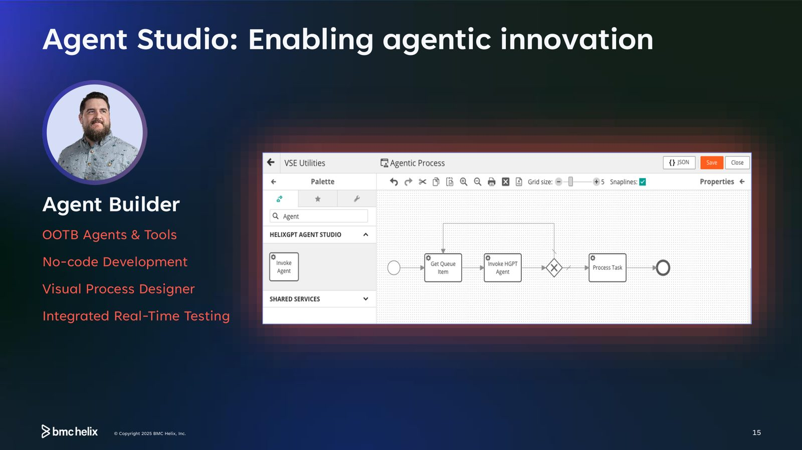
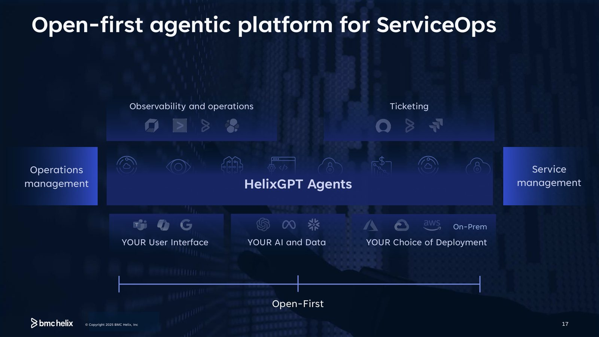

摘要
本講題針對現代企業 IT 維運面臨的「系統複雜度飆升、變更引發事故增多與資源受限」核心挑戰，提出以代理式 AI（Agentic AI）重塑 IT 服務管理的解決方案。講者指出，使用者互動模式正經歷變革，從傳統點擊選單的確定性系統，轉為由自然語言驅動、自主編排跨工具內容的機率式 AI 介面。為此，BMC Helix 推出以 HelixGPT 為系統智慧中樞的 ServiceOps 平台，串接企業知識庫（Confluence/SharePoint）與維運工具（Otel/Splunk/ITSM）。平台內建多款專屬 Agent（如 Employee Navigator、Post Mortem Analyzer），實務上能縮短問題排查時間並降低 25-40% 營運支出。此外，企業可透過低程式碼工具 Agent Studio 視覺化開發與測試客製化代理人，開啟 IT 運作自動化與協作的新紀元。
重點整理
- 技術採用速度持續加快：以8億使用者為比較基準，網際網路花費約14年、社群媒體約7年才達到規模化採用，而 Agentic AI 僅用約2年即達到相近速度。
- IT組織正面臨複雜度失衡的挑戰：75%的IT組織回報系統複雜度提升、76%的事故源自於變更、80%面臨資源限制，顯示IT成長速度已追不上系統複雜度增加的速度。
- AI能力演進歷經 Rule-based AI、Machine Learning、Deep Learning、Foundation Models，到現今的 Multimodal & Agentic AI，代表AI已從「辨識模式」進化到「能自主推理與行動」。
- Agentic AI介面與傳統應用程式的根本差異在於：使用者以自然語言表達意圖、AI Agent跨工具統一協調情境（而非在各App間切換），且行為模式是機率式、自主且以目標為導向。
- HelixGPT 平台提供多個現成代理人（如 Employee Navigator、Post Mortem Analyzer、Situation Observer、Insight Finder、Service Collaborator、Ops Swarmer），並提出量化效益，例如生產力提升15-40%、問題解決速度加快40-60%、事後分析(Post Mortem)時間從數天縮短至數分鐘等。
重點圖片／架構圖




科技採用曲線的典範轉移
講者以科技演進史開場，比較網際網路、社群媒體與 Agentic AI 三個世代的採用速度：以達到約8億使用者規模為比較基準，網際網路（1990-2005）花了約14年，社群媒體（2004-2011）花了約7年，而 Agentic AI（2023至今）僅用約2年就達到相近的採用速度，顯示企業導入代理式AI的速度正呈現指數型加快。
IT維運面臨的複雜度與資源挑戰
隨著資料量與工作量持續膨脹，IT組織普遍面臨成長速度跟不上複雜度增加的困境：75%的IT組織回報系統複雜度提升、76%的事故源自於變更、80%面臨資源限制。講者指出，這正是企業亟需引入代理式AI協助維運與服務管理的背景動機。
從規則式AI到代理式AI的演進
講者回顧AI技術的演進脈絡：從1950-1980年代的規則式AI（如詐欺偵測、醫療診斷，但受限於固定規則）、1990-2010年代的機器學習（垃圾郵件過濾、Netflix推薦）、2012-2017年的深度學習（影像辨識、語音助理），到2018-2023年的基礎模型（分類、摘要、程式撰寫、數學），一路演進到2023年至今的多模態與代理式AI（如 HelixGPT、Einstein 等 Copilot 與助理），能夠自主推理並採取行動。這個演進也帶來使用者互動模式的根本轉變：從傳統應用程式的點擊、選單、表單式操作，轉為以自然語言表達意圖、由Agent跨工具統一協調情境的機率式、自主且目標導向的互動方式。
HelixGPT：系統智慧層與代理人陣容
BMC Helix 以 HelixGPT 作為「系統智慧層(System of Intelligence)」，串接系統紀錄（Google、Azure、OpenAI等LLM供應商）、企業知識庫（Helix Knowledge、ServiceNow Knowledge、Confluence、SharePoint等）與IT維運工具（Helix Otel/BHOM/BHNM、AppDynamics、Dynatrace、Splunk、Elastic等），並透過 MS Teams、Co-Pilot 等介面與使用者互動。平台提供多個現成代理人，包括協助員工自助服務的 Employee Navigator（生產力提升15-40%、Opex降低25-40%）、將事後分析從數天縮短至數分鐘的 Post Mortem Analyzer（準備時間加快90%）、加速情境判讀的 Situation Observer（解決速度加快40-60%、分類時間減少30-60%）、萃取可行洞察的 Insight Finder（MTTI降低30-60%），以及促進跨團隊協作的 Service Collaborator 與 Ops Swarmer 等。
Agent Studio：低程式碼打造專屬代理人
除了現成代理人，BMC Helix 也提供 Agent Studio，讓企業可透過視覺化流程設計器與低程式碼/無程式碼開發方式，搭配即時整合測試，打造符合自身需求的客製化代理人，讓代理式AI的創新能力延伸到企業各個維運場景中，並強調平台採取開放優先(Open-First)的架構，可對接企業既有的AI與資料資產、以及多種部署與使用者介面選擇。